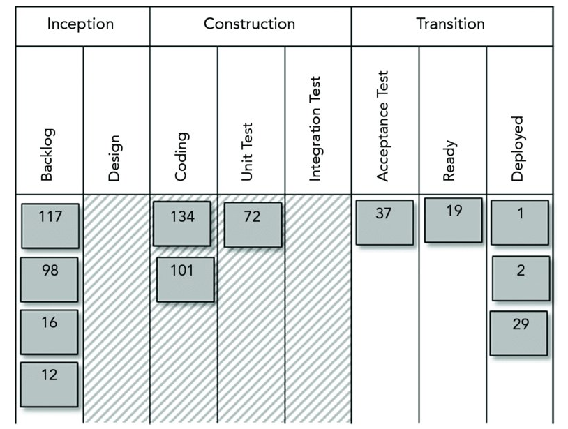
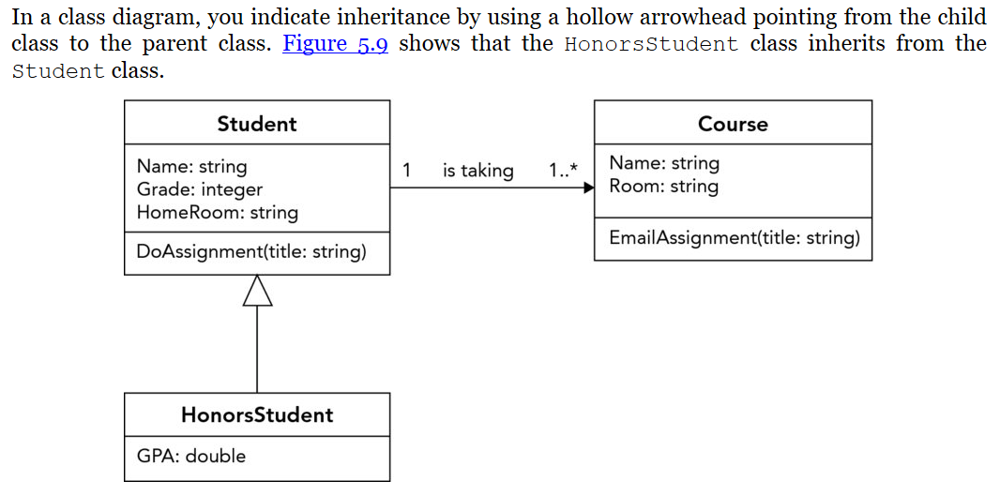
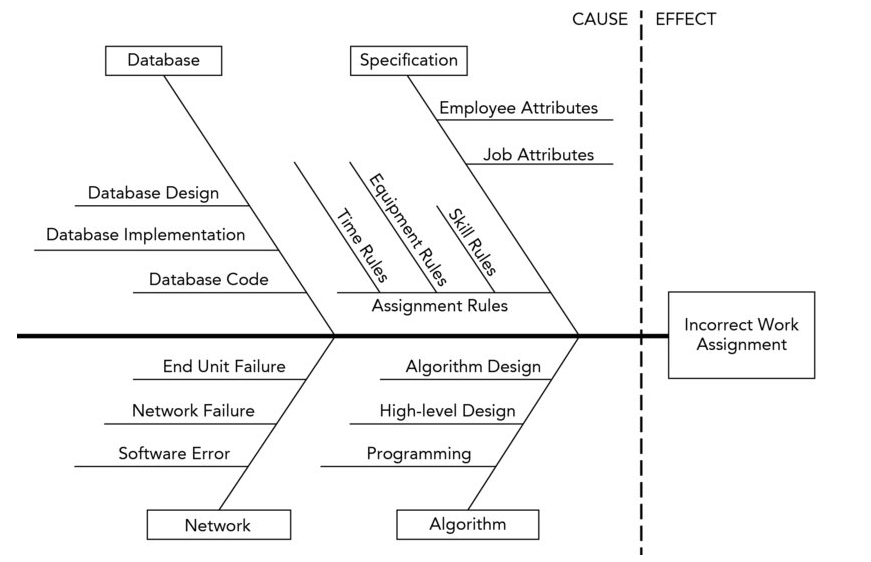
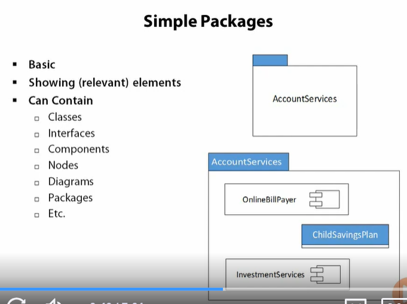
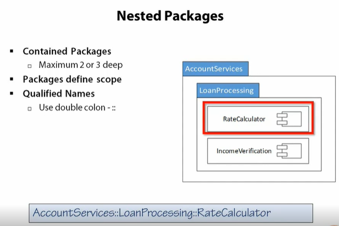
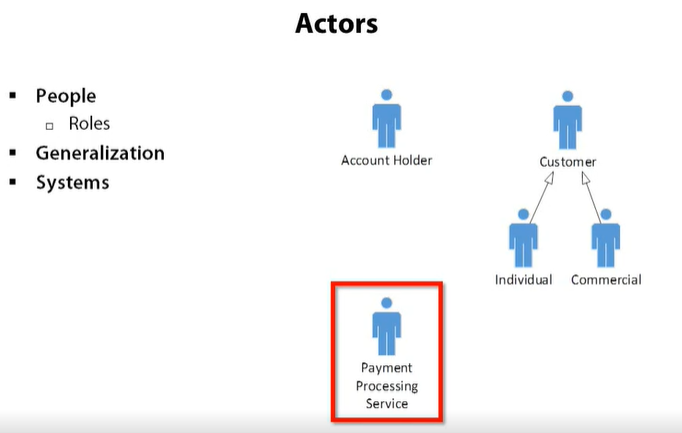
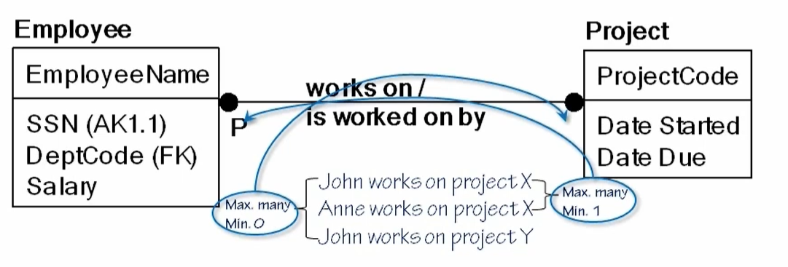
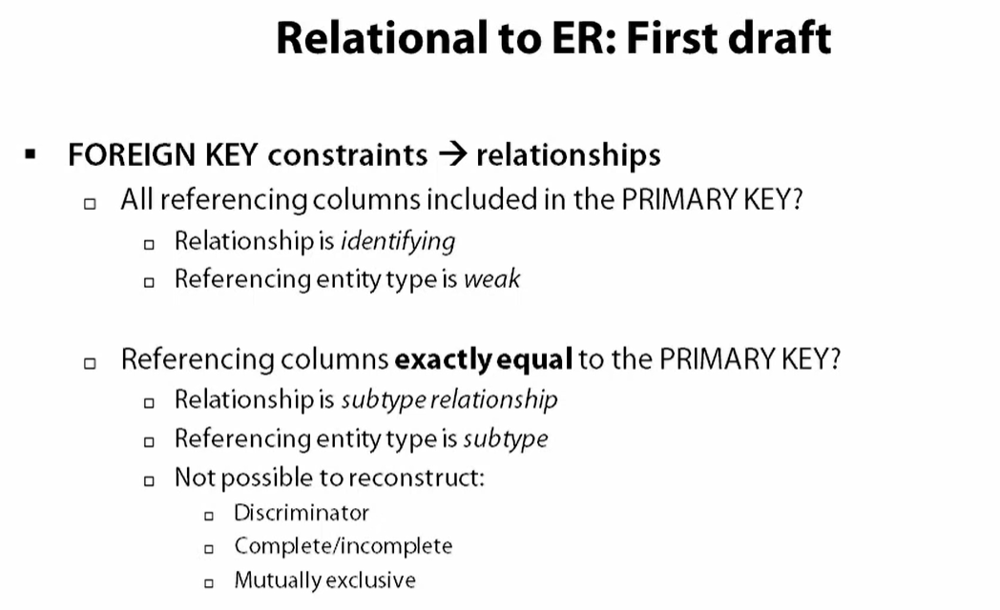
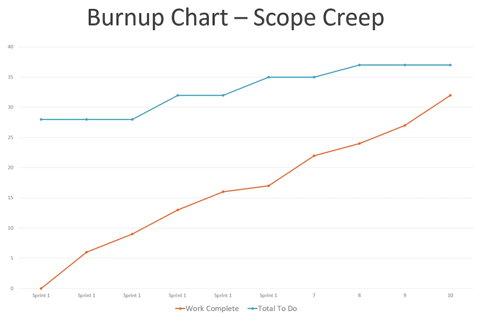

D284 Software Engineering
Resource: Stephens, R. (2015). Beginning software engineering. Wrox. ISBN: 978-1-118-96914-4
CRM
- Leads, Opportunities, Close Rates
- Forecasting
- Market Feedback
- Analysis by Channel
- Teamwork and Engagement
SDLC??
Requirements gathering
Change Control
Executive sponsor/ Executive Champion
Highest ranking executive supporting the project
Project manager
Highest ranking person on the team
Interface between customers and rest of team
PERT Chart
Program Evaluation and Review Technique - Introduced by the Navy in the 50s - AOA, activity on arrow, arrow is task and node is a milestone - AON, activity on node, node is the task and arrows represent precedence relations - Each task lists the time to complete and the predecessor
Critical paths
is the longest possible path through the network. The network is usually formed by a PERT chart
Gantt Charts
Risk Management
Rather than wait for an inssue to happen, be proactive and plan:
- Likelihood
- Severity
- Consequences
- Work-arounds
- Dificulty
- Impact
- Pros
- Cons
Deployment
Deployment
Puting the project in the customer's hands
Can also have the terms:
- Implementation, installation, release
Scope
Planning
List the steps that you hoe to follow, describe eac in detail
List the ways that the step could fail. Describe the actions that you will
take. Describe work-arounds.
Cutover
Process of moving customers over to the new appliation
Staged Deployment
Reduce catastrophic failures of cutover by doing staged development. Create a
staging area, a fully functional environment for practicing deployment.
Get a power user involved in the testing, someone that is an expert at the previous
issues.
Gradual Cutover
Only give the new application to some customer until it is verified that the deployment worked
Incremental Deployment
Release features gradually.
Parallel Testing
Have some users perform their normal tasks on the test application for a while as if it were the real thing, while other users are actually doing the tasks on the old system. The test system does not count.
Deployment Tasks
- Physical Environment
- Hardware
- Documentation
- Training
- Database
- Other people's Software
- Your software
Deployment Mistakes
- Assume everything will work
- Have no rollback plan
- Allow insufficient time
- Don't know when to surrender
- Skip staging
- Install lots of updates all at once
- Use an unstable environment
- Set an early point of no return
Process Models
Predictive Models
Predictive models predict in advance what needs to be done.
A different approach is Adaptive Development Models, that enable you to change
the project's goals if necessay during development.
When Predictive Models maybe successful:
- User Involvement: when users help define the requirements, they're more likely
to be correct.
- Clear vision: Customer and develpers have the same clear vision.
- Limited size: Small size make it easier to see the whole picture
- Experienced Team:
- Realistic:
- Established Technology:
When Predictive Models won't work:
- Incomplete requirements
- Unclear requirements
- Changing Requirements
- No resources
Advantages of Predictive Models:
- Predictability
- Stability
- Cost-savings
- Detailed design
- Less refactoring
- Fix bugs early
- Better documentation
- Easy maintenance
Disadvantages of Predictive Models:
- Inflexible
- Later initial release
- Big Design Up Front (BDUF): Can't design until everything is known.
Waterfall
Predictive model. Finish each step before moving on to the next step.
Waterfall with Feedback
Allows you to move back a step.
Shashimi
Predictive. Steps are allowed to overlap.
- Requirements
- Design
- Implementation - code writing
- Verification - testing
- Deployment
- Maintenance
You could have people working on requirements, desing, implementation, and testing
all at the same time.
Shashimi Series
Multiple shashimi series overlapping. It is incremental. Similar to an incremental waterfall below.
Incremental Waterfall
Incremental waterfall (multi-waterfall) uses a seris of separate waterfall
cascases. Each cascade ends with the delivery of a useable application called an
increment. Build the project incrementally rather than try to tackle the whole
thing at once.
This is somewhat adaptive
V-Model

Decomposition- breaks the application down into peices that you can use. This is the left side of the diagram.
Integration - the right side of the diagram. Working towards complettion of the delivery.
SDLC Software Development Life Cycle
AKA the application develpment life cycle.
A waterfall method that circle back around on it's self.
Sub steps of the SDLC
- Initiation: Customer comes up with the initial idea
- Concept Development: Initiator and interested parties explore posibilities. This
step determines if it is a go/no-go. It is expensive to back out after this.
- project definitions
- feasibility analysis
- cost-benefit analysis
- risk analysis
- Preliminary planning: Project Manager and tech lead are assigned to the project.
They start planning and may give tasks to team leads to plan. Estimate resources
needed, like staff, computers, networks, and such.
- Document tracking (PERT or Gantt charts)
- Gather metrics so the PM can keep track of the project
- Requirements analysis: Team studies the user's needs and creates requirement
documents.
- UML showing application structure
- Pics, use cases, prototypes, business rules
- Tech requirements for the developers to follow in the build
- High-level design: Team creates high-level design that specify major subsystems, data flow, database needs, applications high-level structure.
- Low-level design: how to build the pieces, to the point a second-shelf programmer could build the right thing
- Developement: Write the code.
- Acceptance testing: User tests the applications
- Deployement: Roll out the app
- Maintenance:
- Review: Use metrics gathered during the development to determine if the design process can be improved.
- Disposal:
Iterative Models
Start by building a small program that is useful, then provide increments to add more features to the program. Improves over predictive models issues of not being flexible to changes, requiring the exact requirements up front, and this allows for hazy, undefined requriements to be used in the start, but figured out as the project moves along.
Comparison:
Fidelity is the completeness of a feature. Low-fidelity is a released feature that
needs work still. High/full fidelity the feature is complete.
- Predictive: All features are full fidelity
- Iterative: Inital features are low fidelity. Every iteration afterwards is
higher and higher fidelity until full fidelity is reached.
- Incremental: One feature is rolled out, but it is full fidelity. The other
features will be released incrementally, at full fidelity.
- Agile: Start with the lowest fidelity and features. Later versions add features
and increase fidelity.

Prototypes
Prototype is a simplified model that demostrates some behaviour you want to
study. Mimics a part of the appliation you want to build.
- Horizontal prototypes: demonstrates features but has no depth, like a user interface,
where the user can navigate through pages. That is breadth.
- Vertical prototype: has little breadth, but great depth. Something may hot have
a user interface but is able to print a customer receipt.
Prototype types:
- Throw away: build and discard
- Evolutionary: Build into a finished product
- Incremental prototyping: building the features in several prototypes, then taking the code and building a full application.
Spiral
Used to determine what development approach to take for parts of the project. For example, if you don't understand all the requirements, use and iterative approach.

Unified Process
Iterative and incremental development framework
Four phases:
- Inception: Come up with project's ideas.
- Elaboration: Project requirements
- Construction: Write, test, debug code.
- Transition: Transfer project ot customers.
You can add more phases to this if you want. Ex of two more:
- Production: Users use the appliation.
- Disposal: Remove the app
Rational Unified Process (RUP)
IBMs version. Uses that same 4 basic phases of UP.
Uses the same engineering disciplines:
- Business modeling
- Requirements
- Analysis and design
- Implementation
- Test
- Deployment
RUP has additional IBM tools:
- artifact templates
- document production and sharing
- change rwquest tracking
- visual modeling
- performance profiling
Cleanroom model
Empphaizes defect prevention rather than defect removal.
Rapid Appplication Developement (RAD)
First created by James Martin in the 1980s, he described his method to be RAD.
Now the term has expanded to mean several more models of rapid development
Techniques used in RAD
- Small teams: half dozen or fewer
- Requirement gathering through focus groups, workshops, facilitated meetings, prototyping, and brainstorming.
- Requirement validation through iteration prototypes, use cases, and constant customer testing designs.
- Repeated customer testing of designs as they evolve.
- Constant integration and testing of new code into the application.
- Informal reviews and communication among team members.
- Short iterations lasting between a few months and as little as a week.
- Deferring complicated features for later releases. Doing just enough work to get the job done.
- Timeboxing, setting a tight delivery schedule for producing something, usually the next iteration. The scope might change but the completion date for the iteration cannot.
Iteration 0: RAD starts in the middle of a project, assumably. That iteration usually involves setting up hardware and development invironments. Try not to include this iteration towards the budget.
RAD Advantages
- More accurate rerquirements. THe suctomer can adjust the requirements as needed during the project.
- The ability to track changing requirements. If requirements must change (within reason), the project can start tracking the new requirements in the next iteration.
- Frequent customer feedback and involvement. In addition to helping keep the project on track, theis keeps the users engagged with the project.
- Reduced development time. If everyting goes smoothly, you don't spend as much time writing requirements in exessive detail.
- Encourages code reuse. One of the key RAD ides is to do whatever it takes to get the current iteration done. If an existing piece of code does whit you need it to does (or even almost what you need it to do), timeboxing encourages you to use that code instead of writing something new.
- Possible early realeases with limited functionality.
- Constant testing promotes high-quality code and eases integration issues.
- Risk mitigation. Before each iteration, you can look for potential risks and handle them.
- Greater chand of success. BDUF projects sometimes spend a lot of time following an incorrect path before discovering they're heading in the wrong direction and they need to be radically redone or even canceled. Frequent increments allow RAD projects to detect and correct problems quickly before they become insurmountable.
Rad Disadvantages
- Some software engineering groups resist to change and use RAD
- Doesn't handle large systems well. Communication is difficult for larger projects.
- Requires more skilled team members.
- Requires access to scarce resources. A lot of interaction with customer and system experts.
- Adds extra overhead if the requirements are known completely and correctly in advance.
- Less managerial control.
- Sometimes results in a less optimal design.
- Unpredictable.
James Martin RAD
Used these four phases:
- Requirements planning: Executive champion, management, team leaders and other stakeholders
agree on the project's general goals and requirements.
- User design: User and team members work together to convert he requirements
into a workable design.
- Construction: code
- Cutover: deliver project (staged delivery, gradual cutover, or incremental deployment)

Agile
Set of guidelines, not really a model.
www.agilemanifesto.org
The values are:
- Individuals and interactions over process and tools
- Working software over comprehensive documentation
- Customer collaboration over contract negotiation
- Responding to change over following a plan
** Self-Organizing Teams**: has the flexibility and authority to find its own methods
for achieving its goals.
- Google 'scrumalliance' and 'sef-organizing teams'
Common Agile traits
- Communication is constant with the customer
- Incremental development. If every member of the team understands all the development functions, the team is called cross-functional.
- Focus on Quality
- XP: Extreme programming. Increasing the fequency and amount of code reviewed.
- Pair programming: two or more programmers write the code together, infront of the same monitor. The driver controls the keyboard. The second programmer, navigator, pointer, observer watches and reviews every line of code.
Versioning shcemes
Version 1.2.3.4 means:
1 - Major: thist represnts a new mahor release with significant new features. These
come out once or twice a year.
2 - Minor: All non major releases are minor
3 - Build: Each weekly build gets a new build number
4 - Revision: Builds that are not final weekly builds get a new revision number.
Point releases:
XP
In addition to the above description of XP, there are other possible roles:
- Customer: verifies the needs of the Customer are being met
- Tracker: Monitors the team memvers' progress and provides useful metrics
- Programmer: Defines the application's architecture and writes the code.
- Coach: Helps the team work effectively, self-organizing, and use good XP practices.
- Tester: Helps the suctomer write and perform acceptance test for use cases; looks for missing
requirements and holse in the design.
- Administratior: Sets up and maintains the team members' computers, network, and development tools.
- Doomsayer: looks for trouble
Values:
- Communication
- Simplicity
- Feedback
- Courage
- Respect: see book "Extreme Programming Explained: Embrace Change" by Kent Beck
Practices:
- Have a customer on site
- Play the planning game
- Use standup meetings
- Make frequent small releases
- Use intuitive metaphors
- Keep designs simple
- Defer optimization
- Refactor when necessary
- Give everyone ownership of the code
- Use coding standards
- Promote generalization
- Use pair programming
- Test constantly
- Integrate continuously
- Work sustainably
- Use test-driven and test-first development
- One way is Test first development, write the test first before writing code.
SCRUM
The members of a Scrum team play three roles:
- Product owner: represent the customer, users, stakeholders
- User stories describe project goals
- Backlog: prioritized list of wanted features
- Liason between team and stakeholders
- Team member: build the application
- Scum Master: remover of obstacles for the team. Sometimes leads meetings, makes
sure team is practicing Scrum, challenges team to improve. Funny name, "Scrum bag"
Scrum spirits
Spirits: series of timeboxed incremental iterations
- 30 days long, or two weeks, preference based
- Potentially shippable increment (PSI): fully tested and approved piece
Hold a sprint planning meeting before each sprint begins
Product owner selects the stories for the sprint
Items are moved from the product backlog to the sprint backlog
During a standup, answer the following three questions:
- What did I do since the last scrum?
- What do you hope to accomplish before the next scrum?
- What obstacles do you see in your way?
Sprint review meeting at the end of sprint where Product owner makes sure the requirements were met
Burndown charts measure progress
Lean Software Development (LSD)
Work on only the essentials
Crystal
Developed by Alistair Cockburn
Colors that indicate the project's size
Feature Driven Development (FDD)
Iterative and incremental development model. Created to work with large teams.
Class owners will create a team for making changes to a class. In other agile methods,
anyone can make changes to the code. In this case, parts are given ownership to
individuals.
Agile Unified Process (AUP)
Version of Unified Process, developed by Scott Amber
"Serial at Large" means follows 4 phases of UP, sequentially
"Iterative in the small" meas performs each of theos phaes iteratively
Disciplined Agile Delivery (DAD)
Scott Amber moved to this in 2012 from AUP.
People first, learning oriented hybrid agil approach.
Dynamic Sytem Development Mehtod (DSDM)
www.dsdm.org
Meant to bring business deciplines to the relatively untamed RAD wilderness
Kanban
japanese for sign board
Just-in-time (JIT) production methodology for controlling logistics in a production chain
Uses cards, called Kanbans, at each station. When the cards run out at the station,
that station is sent to the supplier to indicate a need for more.

Limit Work in progress (WIP). The shaded areas are consided WIP. This is to limit task switching and keep production constant. Limit multitasking.
Gathering Requirements
Requirements are:
- Clear
- Unambiguous
- Consistent: Don't contradict each other, not too many constraints that make it unsolvable
- Prioritized
- MOSCOW is a method of Prioritization:
- Must: required
- Should: there are important features that should be included if possible
- Could: Desirable features
- Won't: Optional features
- Verifiable
Requirement Categories:
- Audience-Oreinted Requirements
- Business Requirements
- User Requirements
- Functional Requirements
- Nonfunctional Requirements
- Implementation Requirements
FURPS
Acronym for this system requirement categories
- Functionality
- Usability
- Reliability
- Performance
- Supportability
FURPS+: adds categories software engineers thought were missing
- Design Constraints
- Implementation requirements
- Interface Requirements
- Physical requirements
Common Application Requirements:
- Screens
- Menus
- Navigation
- Work flow
- Login
- User types
- Audit tracking and history
- Archiving
- Configuration
How to gather requirements
- Listen to Customers and Users
- Who, what, when, where, why, how
- Study users
Refine Requirements
- Copy existing systems
- Clairvoyance
- Brainstorm
- Osborn method:
- Focus on quality
- Withhold criticism
- Encourage unusual ideas
- Combine and improve ideas
- Popcorn: people shout out ideas that come to them
- Subgroups: break into groups for thinking
- Sticky Notes: write on something and share with group
- Idea passing: pass the idea around for review
- Circulation list: idea passing over email
- Individual
- Osborn method:
Recording Requirements
- UML
- User Stories
- Use cases: description of a series of interactions between actors.
- Title
- Main success scenario
- Extensions
- Prototypes
- Requirement Specification
Requirement Validation
Makes sure requirements say the right things
Requirement Verification
Checking that the final applications actually satisfies requirements
Change Requirements
Change control board: submittals for changes
High-Level Design
High-level design provides a view of the system at the abstract level. How the major
pieces of the finished app will fit together and interact
The following are major things to consider adding to high-level design:
Security
- OS security
- App security
- Data
- Networking
- Physical
Hardware
User Interface
Internal Interfaces
External Interfaces
Architecture
- Monolithic
- Client/Server architecture
- Two-tier architecture: client is separate from the server
- Component-based software engineering (CBSE): loosely coupled components
- Service-oriented Architecture (SOA): services that can run as programs on their own that are joined together
- Data-centric architecture
- Event-driven architecture
- Rule-based architecture
- Distributed architecture: different parts of app run on different processors
- Mix and match
Reports
Databases
Audit trails
Track user actions on app
User Access
Database Maintenance
Configuration Data
Data Flows and States
Training
UML
www.uml.org
There are 13 types:
- Structural Diagram
- Class Diagram
- Composite Structure Diagram
- COmponent Diagram
- Deployment Ditagram
- Object Diagram
- Package Diagram
- Profile Diagram
- Behavior Diagram
- Activity Diagram
- Use Case Diagram
- State Machine Diagram
- Interaction Diagram
- Sequence Diagram
- Communication Diagram
- Interaction Overview Diagram
- Timing Diagram
Structural Diagram
Shows things that will be in the system
Here is a class UML:

Above, 1 student is taking one or more classes
Development
The Right Tools
Profilers
Let you determine what parts of the program use the most tiem, memory, files or other resources.
Static Analysis Tools
Study the code without executing it. Focus on the code style.
Testing Tools
Source code formatters
Refactoring Tools
Selecting Algorithms
- Effective
- Efficient
- Predictable
- Simple
- Use packaged code/algorithms already in the language
Top-Down Design
Top-down, also calleds stepwise refinement: start with a high-level statement of a problem, and you break the problem down into more detailed pieces.
When commenting code, write what the code is supposed to do, not what it actually is doing. The 'actually doing' comments are pseudo code.
Avoid magid numbers, which are numbers that just appear with no explaination. Like just assigning 201 for a return type. You could create a constant variable called 'ELEMENT_CREATED' and assign it the value 201.
First make it work. Then make it faster if necessary.
Use a Profiler to see where the performance bottleneck is.
Testing
Testing Goals
Toolsmith: The job of a person on large projects. They help out by building tools that will help out the teams. Like count lines, re-arrange the controls on a form, search customer data for pattersn. The handyman
Levels of Testing
Summary:
Unit testing - You unit test each individual piece of code. Think each file or class.
Integration testing - When putting several units together that interact you need to conduct Integration testing to make sure that integrating these units together has not introduced any errors.
Regression testing - after integrating (and maybe fixing) you should run your unit tests again. This is regression testing to ensure that further changes have not broken any units that were already tested. The unit testing you already did has produced the unit tests that can be run again and again for regression testing.
Acceptance tests - when a user/customer/business receive the functionality they (or your test department) will conduct Acceptance tests to ensure that the functionality meets their requirements.
You might also like to investigate white box and black box testing. There are also performance and load testing, and testing of the "'ilities" to consider.
Load Test - simulate a lot of users all running simultaneously
Unit Testing
Unit tests verify the correctness of a specific piece of code.
Integration Testing
After you write a chunk of code and use unit tests to verify that it works, it's time to intergrate it into the existing codebase. An integration test verifies that the new method works and plays well with others. It checks that existing code calls the new method correctly , and that the new method can call other methods correctly.
Regression testing is a type of QA software testing that ensures changes or updates to an existing software product do not affect previously functioning features.
Automated Testing
Automated testing tools let you define tests and the results they should produce. Like what keystrokes or mouse actions should be taken for the test.
A good testing tool should let you shcedule tests so that you can run regression testing every night after the developers go home.
Component Interface Testing
Component interface testing studies the interactions between components.
System Testing
System testing is an end to end run of the whole system.
Acceptance Testing
Does it meet the user's requirements.
Alpha Testing
First round of testing by selected customers. Not open to the public.
Beta Testing
Second round of testing. Sometimes released as a limited trial to users.
And others....
- Compatability test
- Destructive test
- Functional test
- Installation test
- Internationalization test
- Nonfunctional test
- Performance test
- Security Test
- Usability test
Testing Techniques
Exhaustive Testing
Proves that a method works under all cases by providing every case
Black-box testing
You pretend you don't know the way the method works, it's a black box. You just spray a whole bunch of different cases into it and see if it breaks.
White-box testing
You know what the method looks like on the inside.
Gray-box Testing
You know some, but not all of the internals.
Testing Habits
Test and Debug when you are Alert
Test Your Own Code
Have Someone else test your code
The Rules of Egoless Programming:
- Understand and accept that you will make mistakes
- You are not your code.
- No matter how much "karate" you know, someone else will always know more.
- Don'e rewrite code without consultation
- Treat people who know less than you with respect, deference, and patience.
- Th only constant in the world is change.
- The only true authority stems from knowledge, not from position.
- Fight for what you believe, but gracefully accept defeat.
- Don't be "the guy in the room". Collaborate with others, don't be isolated.
- Cirtique code instead of people - be kind to the coder, not the code.
Fix your own bugs
Think before you change
Lincoln Index
Equation for estimating bugs in program
Metrics
Defect Analysis
Defects: all incorrect features
- bugs: type of defect
- changes: type of defect
Categorizing defects:
- Discoverer
- Severity
- Time discovered
- Age at fix
- Task Type: Like High-level, Security, User Interface, Database...
Ishikawa Diagram
Called fishbone diagrams. Used to determine which category a defect should go into.
Also called cause and effect diagrams.

The defect is listed on the right. All causes leading up to the defect are drawn as "bones".

Software Metrics
Metrics give you quantitative measurements. Defect analysis gives you qualitative results.
Attribute: something you can measure.
Metric: value that you sue to study aspects of a project. Sometimes the same as and attribute.
Study the metrics to determine indicators of the project's future.
Use the indicators to make improvements
Attributes of a Metric
- Simple
- Measurable
- Relevant
- Objective / quantitative
- Easily obtainable
Process Metrics
Measure your organization's development process.
Project Metrics
Measure and track the current project
Things to measure
- Cost
- Effort
- Defect Rates
- Lines of code (LOC)
- Pages of documentation
- Functionality
- Quality
- Complexity
- Efficiency
- Reliability
- Maintainability
Measuring Metrics

Function Point Normalization
Generates a number representing the application's complexity.
Overview:
- Count five specific function point metrics that include such things as the number of
inputs and the number of outputs.
- Multiply eash of those values by a complexity fator to indicate how complicated each
activity is. Add up the results to get a raw FP value.
- Calculate a series of complexity adjustment factors that take into account the
importance of general features of the application. Add the complexity adjustment factor
to get the complexity adjustment value (CAV).
- Take a weighted average of the raw FP and the CAV and you have the final FP value.
Count Function Point Metrics:
- Inputs: The number of times data moves inot the application and updates the
application's internal data.
- Outputs: The number of times outputs move out of the application.
- Inquiries: The number of times the application performs a query/response action.
- Internal Files: The number of internal logical files used by the application.
- External Files: The number of files that the application uses that are maintained by
some other program.

Calculate the Complexity Adjustment Value:
Use the importance rating to assign for each of the items.

Factors:


Calculate Adjusted FP:
FP = (raw FP) x (0.65 + 0.01 X CAV) =>
FP = (267) x (0.65 + 0.01 X 42) = 285.69
UML
Common Users of UML Diagrams:
- Product Owner
- Business Analyst
- Architect
- Operations
- Quality Assurance
- Developer
Building blocks
Things:


Relationships:

Extensions:

Structural Modeling
- Physical and conceptual parts.
- Static parts
- Nouns
- Types:
- Class
- Component
- Package
- Deployment
Class Diagrams
- Identifies Vocabulary
- Relationships
Classes
- Represents an Entity (Noun):
- Attributes
- Operations
- Omit details if not required
- Interface

- Implementation and Inheritance
- Account Implements the interface IAccount
- CheckingAccount "Is A" Account (Inheritance)
- Absract Class: Account is an abstract class
- Concrete Class: CheckingAccount is a concrete class

Relationships

- Aggregation is a object that can stand alone. "Payee" is a stand alone to "Customer".
- Composite objects rely on other parts. "Customer" relys on "Address".
- Multiplicity describes how many instances of one class can be connected to an instance of another class through a given association.

Component Diagram

- Interfaces:
- Realized: "Lolipop" connected to a square port. Service provided by the lolipop.
- Required: Half-circle, services that need to be built
- Tight connections, two boxes connected between components.
- Loosely Connected, a half circle connecting to a full circle.

- Components can be inside components
- An arrow pointing in means a resource being supplied
- An arrow pointing out means a component output. This is a component in a
component.

Package Diagram
- Logical Container, showing dependencies and groupings
- Support Large Models

-
Nested Package
- Use a Fully Qualified Domain name to access nested components

- Use a Fully Qualified Domain name to access nested components
-
Web Client has a dependency on Account Services
- BirthdayBonus is dependent on ChildSavingsPlan

Deployment Diagram

Nodes can be represented as an image (stereotyped) or by cubes. Cubes can also be elaborated with details (multiplicity, attributes..).

Behavoral Modeling
- Functionality
- Process
- Interactions
- Dynamic Parts
- Verbs
- Types of Diagrams:
- Use Case
- Sequence
- State
- Activity
Use Case Diagram
Identify what is needed, not how it is implemented


- Generalize: two or more actions are grouped into one action for simplification.

- One use case may have many scenarios.
- In this case, many use case diagrams will have to be created for each scenario.
- Scenarios:
- Steps in process
- Branches
- Extensions
- Exceptions
- Use Case vs. Use Case Diagrams
- A non-diagram is a text document
- Pre-Conditions
- Post-Conditions
- May relate to User Stories
Sequence Diagram

Class:
- Lifeline: dashedline that shows how long the class is alive.
- Focus of Control: block on the lifeline
- X on lifeline to mark that it was deleted

- Asynchronous messages don't have a dotted return line
- Sequences can loop, indicated by a box that says loop:

- A box that says "Opt" means this sequence is optional. The condition that triggers the option is called a Guard Condition and is written below opt.
- A box with "alt" is a conditional. Each if/else gaurd clause is separated by a horizontal dash line:

- A Parallel box is represented with the word "par". Multiple actions can occur at the same time, indicated within the box by sequences separated by a horizontal dash line.
State Diagram

-
Swim lane: the area for an individual or party responsible for the actions. Represented above with "Customer", "Loan Officer", and "Loan Processor".
-
Internal behavior describes what methods are taken for each action. In the example below, on entry into the method, another method is called, logPaymentAttempt(). On exit from the method, logConfirmation is performed.
- The start of a state diagram is a solid circle
-
The end of a state diagram is a solid circle with a circle around it.

-
The only transitions that won't be labeled are the start state and end state.
Activity Diagrams
Similar in looks to a flow chart

- Action: single step that cannot logically be broken down
- Activity: multi-step that takes multiple actions
- Both Activity and Action are represented the same.

Relational Database Design
- Based on Set Theory
- First-order predicate logic
-
Row (tuple), Column (attribute), Table (relation)
-
Cod's 12 rules (13 actually):
- 0:Foundation Rule
- 1:Information Rule
- 2:Guaranteed Access Rule
- 3:Systematic Treatment of Null Values
- 4:Dynamic On-line Catalog Based on the Relational Model
- 5:Comprehensive Data Sublanguage
- 6:View Updating Rule
- 7:High-level insert, update and delete
- 8:Physical Data Independence
- 9:Logical Data Independence
- 10:Integrity Independence
- 11:Distribution Independence
- 12:Nonsubversion
Data Modeling
- Conceptual Data Model
- All information in the organization
- Not necessarily stored in computers
- Logical data model
- For storing in computers
- For a specific database technology
- Implementation independent
- Physical data model
- Optimized for specific vendor
- Based on logical model
ER Modeling (Entity-Relation)
- IDEF1X notation
Entity Types
- Entity: Objects, events, or abstractions
- Entity Instance
- Entity Type: describe all instances of the same type.
Attributes
- Keys:
- Composite Key
- Candidate keys:
- One primary key
- Zero or more alternate key
- Candidate keys:
- Composite Key
Relationship
- Identifying relationship: Solid line showing the child is dependent on the parent for its identity and cannot exist without it.
- Solid lines represent identifying relationships and dashed lines represent non-identifying relationships. In a non-identifying relationship, the foreign key field does not form a part of the parent table's primary key.
-
Maximum Cardinality:

-
Minimum Cardinality:
- Parent adds a "P" if at least one is required, else it is left as is.
- A diamond is added from the child if min. is 0.

- Read the realation from parent to child. Ex: "League contains Member". The underside can be the child to parent relation. "Member plays in League"
- Child in a relationship is weak, represented with round corners, if it's primary key is dependent on the key of the parent. The parent key is part of the child's primary composite key.
- A Child with corners is strong and has it's own primary key, not related to other tables' primary key.
- There can be more than one relationship between entities. (The bottom relation is one to one):

Going the other way:

- Many to many relationship:
 - Recursive relation can never be an identifying relationship:

- Normalizing between tables creates a weak relationship with a join table:

- Subtypes:
- A board member cannot be a volunteer. A member could be neither board member or volunteer. This is marked with a single horizontal line.
- A board member is either male or female. Because they have to be one or the other, there is a double horizontal bar for the subtype.
- Subtypes are one-to-one relationship


Create a Data Model
- Mission statement: Broad overview (I think user story)
- Interviews:
- Management
- Subject matter experts
- End users
- Interviewing styles:
- Use concrete examples
- Find the relevant constraints
- Convert the interview responses to facts
- Create the data model
- Functional dependencies
- Normalize the data model
- Reading a mission statement:

Creating the ER model

- Find Entity Types
- All Entity types have an identifying fact type
- You will have to create your own language for identifying an optional attribute in an Entity.
Converting to Relational database Design
Relational DB representation:
- Table1(Column1, Column2, Column3)
- Very vague. The underlined column is the candidate key(s)
- Dashed underlines are alternate keys
-
Another Representaion of DB is Data Description Language (DDL) of SQL:

-
Many to many relationships will have to have a join table
- Generated Column: when attribute is inserted, a check manipulates the value, usually to make it acceptable
- Asserted column: during an attribute insertion, a check that performs a query on the database to check the value is performed.
Normalization
Steps:
- First Normal Form (1NF)
- Second Normal Form (2NF)
- Third Normal Form (3NF) (best option)
- Elementary Key Normal Form (EKNF)
- Boyce-Codd Normal Form (BCNF)
- 4th
- 5th
- Domain/Key Normal Form (DKNF)
- 6th
Functional Dependencies
- Determinant: attribute A => attribute B
- "Attribute B is functionally dependent on attribute A"
- Attribute A = Dave
- Attribute B = No birthday on file
- Attribute A is the Determinant
- Dependent Attribute: attribute B above
- Trivial Dependency: every attribute depends on itself
- Derived Attribute: Attribute calculated from other attributes
- Storing: Price, tax rate, and taxed amount. Taxed amount is derived.
- Avoid derived attributes
First Normal Form
- Every table must have a key
- Candidate keys: attributes that could qualify as primary keys or alternate keys
- All attributes must be dependent on the Candidate Key
Agile
Sprint Board. PBI is "Product Backlog Item". Minimize works in progress (WIP).
Managed by Developers. Burndown chart measures the developer's approach to completion.

Burn-up Chart: The line at the top represents items that have to be completed.

Estimation Wall: Team members place tasks in the column where they feel it matches the task time duration.
Other members can move/change once placed.